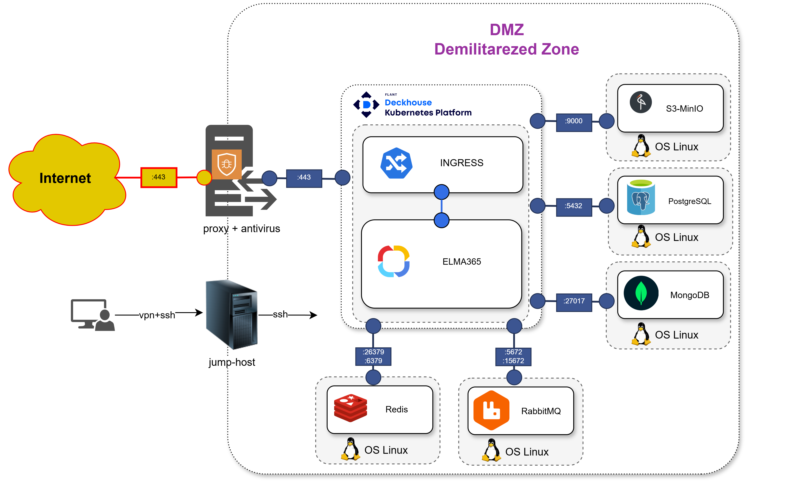

Для обеспечения максимальной производительности и безопасности системы ELMA365 важно правильно настроить файерволл и разместить ключевые компоненты, такие как приложение ELMA365 и СУБД.
ELMA365 является микросервисным решением, использующим технологии Golang, NodeJS, Angular, PostgreSQL, MongoDB, RabbitMQ, Redis, Docker, Kubernetes и S3 MinIO для хранения файлов.
В статье рассматриваются основные аспекты, которые помогут оптимизировать и обезопасить работу приложения.
- Размещение приложения ELMA365 и СУБД в DMZ (Demilitarized Zone — изолированная зона сети) минимизирует риски несанкционированного доступа к внутренним ресурсам.
Доступ должен строго контролироваться с помощью файерволла. Так вы ограничите доступ к внутренней сети и снизите риски атак. Взаимодействие между приложением и СУБД должно осуществляться через защищённые каналы связи.

- Настройка файерволла, контролирующего входящий и исходящий трафик, блокируя потенциально опасные соединения. Для ELMA365 рекомендуется настроить файерволл следующим образом:
- открывайте только те порты, которые нужны для работы системы. Например: порт 443 (HTTPS) для взаимодействия с пользователями, внутренние порты для взаимодействия между микросервисами (например, RabbitMQ, Redis, MinIO);
- закройте все порты, которые не используются системой, чтобы минимизировать поверхность атаки;
- ограничьте доступ к DMZ только с определённых IP-адресов или подсетей, используя правила ограничения или VPN. Это поможет предотвратить несанкционированный доступ к приложению;
- добавьте в исключения порты 443 для доступа к registry (
hub.elma365.tech) и репозиторию (repo.elma365.tech).
- Антивирусное программное обеспечение может негативно влиять на производительность системы, особенно если оно проверяет трафик между контейнерами и СУБД. Для минимизации этого влияния рекомендуется:
- установить антивирус на обратном прокси. Это позволит проверять только входящий и исходящий трафик на границе DMZ, не затрагивая внутренние коммуникации между приложением и СУБД;
- исключить внутренние порты из проверки. Добавьте в исключения антивируса порты, используемые для взаимодействия между микросервисами (например, порты RabbitMQ, Redis, MinIO). Это ускорит обмен данными внутри системы;
- исключите файлы СУБД из проверки. Поскольку файлы базы данных не содержат вредоносного кода, их проверка антивирусом не приносит пользы и замедляет работу СУБД.
- Для повышения безопасности, производительности и управляемости системы рекомендуем использовать Linkerd — lightweight service mesh (легковесный сервис-меш). Он добавляет в Kubernetes такие функции, как прозрачное шифрование трафика, балансировка нагрузки и управление трафиком. Linkerd автоматически шифрует весь трафик между микросервисами с помощью mTLS (mutual TLS). Это обеспечивает защиту данных при передаче между контейнерами внутри кластера Kubernetes.
- Чтобы обеспечить отказоустойчивость системы, настройте регулярное резервное копирование данных.
Для сетевого взаимодействия между серверами на уровне инфраструктуры откройте перечисленные ниже порты. Подробнее читайте в официальной документации Deckhouse.
Трафик между master-узлами
Порт |
Протокол |
Назначение |
2379, 2380 |
TCP |
Репликация etcd |
4200 |
TCP |
Вебхук-обработчик Cluster API |
4201 |
TCP |
Вебхук-обработчик для cloud-провайдера VMware Cloud Director |
4223 |
TCP |
Вебхук-обработчик контроллера Deckhouse |
Трафик от master-узлов к узлам
Порт |
Протокол |
Назначение |
22 |
TCP |
SSH для первичной настройки узлов статичным провайдером |
10250 |
TCP |
kubelet |
4221 |
TCP |
apiserver bashible для доставки конфигурации на узлы |
4227 |
TCP |
Вебхук-обработчик компонента runtime-audit-engine |
Трафик от узлов к master-узлам
Порт |
Протокол |
Назначение |
4234 |
UDP |
NTP для синхронизации времени между узлами |
6443 |
TCP |
kube-apiserver для контроллеров, работающих в сетевом пространстве имён узла |
4203 |
TCP |
Метрики компонента machine-controller-manager |
4219 |
TCP |
Прокси для пакетов registry registry-packages-proxy |
4222 |
TCP |
Метрики контроллера Deckhouse |
Трафик между узлами
Порт |
Протокол |
Назначение |
ICMP |
ICMP для мониторинга связности между узлами |
|
7000–7999 |
TCP |
Репликация DRBD для sds-replicated-volume |
8469, 8472, 4299, 4298 |
UDP |
VXLAN для инкапсуляции трафика между подами |
4204 |
TCP |
Debug для контроллера Deckhouse |
4205 |
TCP |
Метрики модуля ebpf-exporter |
4206 |
TCP |
Метрики модуля node-exporter |
4207, 4208 |
TCP |
Метрики контроллера ingress-nginx для инлета HostWithFailover |
4209 |
TCP |
Метрики управляющего слоя Kubernetes |
4210 |
TCP |
Метрики kube-proxy |
4211 |
TCP |
Метрики Cluster API |
4212 |
TCP |
Метрики модуля runtime-audit-engine |
4213 |
TCP |
Метрики kube-router |
9695 |
TCP |
Метрики агента sds-node-configurator |
3367 |
TCP |
API агента модуля sds-replicated-volume |
9942 |
TCP |
Метрики агента sds-replicated-volume |
49152, 49153 |
TCP |
Живая миграция ВМ в Deckhouse Virtualization Platform |
4218, 4225 |
TCP |
Синхронизация через протокол |
4218, 4225 |
UDP |
Синхронизация через протокол |
4220, 4226 |
TCP |
Метрики компонентов speaker модулей metallb |
4224 |
TCP |
Метрики node-local-dns |
4240 |
TCP |
Порт для процедуры healthcheck соседних узлов в CNI Cilium |
4241 |
TCP |
Метрики агентов CNI Cilium |
4242 |
TCP |
Метрики оператора CNI Cilium |
4244 |
TCP |
API для модуля cilium-hubble |
Внешний трафик к master-узлам
Порт |
Протокол |
Назначение |
22, 22322 |
TCP |
SSH для инициализации Deckhouse Kubernetes Platform |
6443 |
TCP |
Прямой доступ к apiserver |
Внешний трафик к фронтенд-узлам
Порт |
Протокол |
Назначение |
80, 443 |
TCP |
Прикладные порты для запросов к Ingress-контроллеру по протоколам HTTP и HTTPS. Обратите внимание, что эти порты настраиваются в ресурсе IngressNginxController и могут отличаться в разных инсталляциях |
5416 |
UDP |
OpenVPN |
5416 |
TCP |
OpenVPN |
10256 |
TCP |
healthcheck-порт для внешних балансировщиков |
30000–32767 |
TCP |
Диапазон портов NodePort |
Внешний трафик для всех узлов
Порт |
Протокол |
Назначение |
53 |
UDP |
DNS |
53 |
TCP |
DNS |
123 |
UDP |
NTP для синхронизации с внешними серверами точного времени |
443 |
TCP |
Container registry |
Взаимодействия с БД
Порт |
Протокол |
Назначение |
5432 |
TCP |
Стандартный порт для подключения к базам данных PostgreSQL |
5000 |
TCP |
Стандартный порт для взаимодействия с мастер-узлом в кластере Patroni |
5001 |
TCP |
Стандартный порт для взаимодействия с slave-узлом в кластере Patroni |
8008 |
TCP |
Стандартный порт для доступа к REST API Patroni, используемому для управления кластером |
27017 |
TCP |
Стандартный порт для подключения к базам данных MongoDB |
6379 |
TCP |
Стандартный порт для подключения к базам данных Redis |
26379 |
TCP |
Стандартный порт для подключения к базам данных Redis Sentinel |
5672 |
TCP |
Стандартный порт для протокола AMQP (Advanced Message Queuing Protocol), используемого RabbitMQ для передачи сообщений между приложениями |
5671 |
TCP |
Стандартный порт для протокола AMQP, защищённая версия порта 5672, используемая для AMQP с шифрованием через TLS/SSL |
15672 |
TCP |
Стандартный порт для веб-интерфейса управления RabbitMQ |
15671 |
TCP |
Стандартный порт, защищённая версия порта 15672, используемая для веб-интерфейса RabbitMQ с шифрованием через TLS/SSL |
9000 |
TCP |
Стандартный порт для подключения к S3-совместимому объектному хранилищу Minio |
В исключения необходимо внести директории /opt/elma365/ и /var/lib/docker/overlay2/, а также следующие БД и процессы:
- Базы данных приложения ELMA365:
- /opt/bitnami/postgresql/bin/postgres;
- /opt/bitnami/mongodb/bin/mongod;
- /opt/bitnami/mongodb/bin/mongo;
- redis-server;
- /opt/bitnami/redis/bin/redis-server;
- /opt/bitnami/erlang/lib/erlang/erts-12.3.1/bin/beam.smp;
- /opt/bitnami/rabbitmq/sbin/rabbitmq-server;
- minio;
- /opt/bitnami/minio/bin/minio server.
- Процессы приложения ELMA365:
- /bin/sh;
- /coredns;
- /hostpath-provisioner;
- /nginx-ingress-controller;
- /opt/bitnami/erlang/lib/erlang/erts-12.3.1/bin/epmd;
- /sbin/dinit;
- /snap/microk8s/3410/bin/containerd;
- /snap/microk8s/3410/bin/containerd-shim-runc-v1;
- /snap/microk8s/3410/kubelite;
- /srv/elma365ctl-server;
- /usr/bin/dumb-init;
- /usr/bin/kube-controllers;
- /usr/libexec/git-core/git-daemon;
- /usr/local/bin/node;
- /usr/local/bin/runsvdir;
- calico-node;
- git daemon;
- gpg-agent;
- nginx: cache manager process;
- nginx: master process;
- nginx: worker process;
- runsv;
- sh;
- внутренние процессы ELMA365.